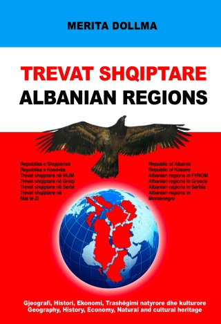

Trevat Shqiptare/Albanian Regions
Duke shpresuar se kam shtuar një gur në kalanë e botimeve për shqiptarët dhe trevat shqiptare, ju uroj udhë të mbarë në njohjen e trevave shqiptare!-Autorja
I hope this book is another stone in the castle of the editions about Albanians and Albanian territories. Enjoy the trip in the Albanian regions!
-The Author